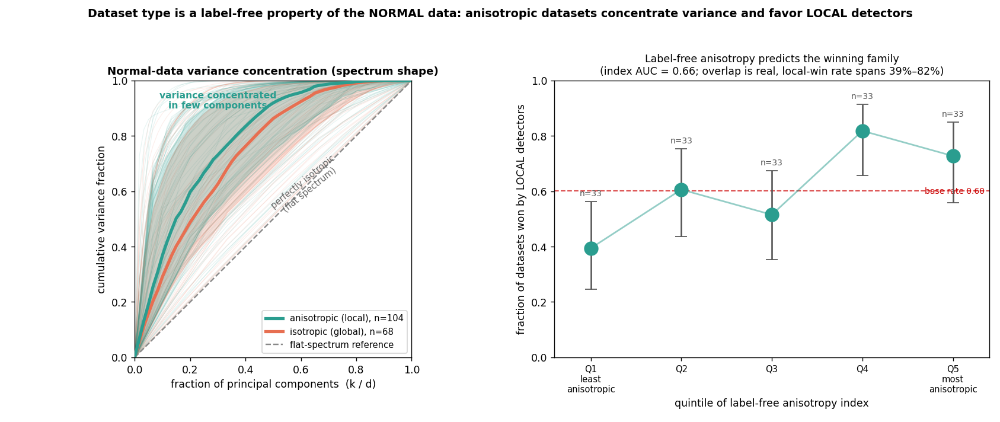

Unsupervised anomaly detection ships without labels, so choosing which detector and hyperparameters to trust is itself an unsupervised problem. Many model-selection methods have been proposed to solve it, and each is reported to improve on the last. But the datasets used to evaluate these methods are contaminated: anomalies that a single feature or a one-line rule already separates, labels corrupted by window overlap and train/test leakage, results pooled across inconsistent metrics, near-duplicate anomalies that inflate easy cases, and comparisons reported without significance. A selection method judged on such data is credited for artifacts, not for skill at picking a good detector.
We introduce ADReal, a benchmark for evaluating unsupervised model selection, built from 173 tabular and multivariate time-series datasets by a single detector-free pipeline. Each of five construction rules closes one contamination channel: it removes trivially separable and mislabeled anomalies, enforces leakage-free validation on held-out normals only, reduces each task to distinct anomaly cases, scores detectors on one base-rate-normalized metric, and evaluates each selection method by its regret against the oracle-best detector with family-balanced significance. No rule consults a detector, so the benchmark cannot be tuned to flatter any method.
Across roughly thirty classical and deep detectors and eight selection methods, the honest protocol changes the result. Under leakage-free validation, agreement-based selectors that dominate transductive evaluation collapse to random; only entropy and mass-volume survive. We then introduce SPARC, which routes between local and global detector families using a label-free anisotropy signal of the normal data, and is the only method that significantly outperforms both survivors (family-balanced regret 0.156; $p = 0.021$ versus majority vote, $p = 0.036$ versus entropy). Honest measurement changes the leaderboard. We release the benchmark, the per-dataset detector scores, and the code.
Deploying an anomaly detector without labeled anomalies is common in fraud, industrial monitoring, health, and cybersecurity, and the best detector varies widely across datasets: Isolation Forest wins on some, LOF on others, ECOD on yet others. A decade of work has proposed label-free selection criteria, from entropy and mass-volume curves [1] to internal relative-evaluation scores [2], meta-learning [3], and rank aggregation across a model pool [4], and each new method reports gains over the last on a shared collection of datasets. The ranking of these selectors is only as trustworthy as the data they are evaluated on.
That data is contaminated in five specific ways. Many benchmark anomalies are separable by a single feature or a one-line threshold rule, so any detector scores well and the selector's choice barely matters. Labels are corrupted by construction: a time-series window inherits an anomaly flag from a single touched point, and normals leak between train and test through overlapping windows and shared rows. Results are pooled across metrics that reward different things, so a method can lead on one dataset's AUC and one dataset's average precision and be credited with a win on neither's terms. Near-duplicate anomalies repeat the same easy case and inflate the scores of whatever happens to catch it. And comparisons are reported as point differences with no test of significance. A benchmark built on such data measures artifacts, not selection skill.
We rebuild the measurement. ADReal is a benchmark of 173 tabular and multivariate time-series datasets produced by one detector-free pipeline whose five construction rules each target one contamination channel, and whose purpose is to evaluate unsupervised model-selection methods: a selection method picks one detector from a pool without labels, and ADReal scores it by its regret against the oracle-best detector. On ADReal we evaluate roughly thirty classical and deep detectors and eight selection methods. The honest protocol changes the result: agreement-based selectors, which dominate under transductive evaluation, collapse to random once validation sees only normals; entropy and mass-volume survive. Building on this, we introduce SPARC, a structure-aware selector, and it is the only method that significantly outperforms both survivors.
Our contributions:
Anomaly detectors and benchmarks. Established detectors span the standard families: isolation-based (Isolation Forest [8]), density-based (LOF [9]), boundary-based (one-class SVM [10]), distribution-based (COPOD [11], ECOD [12], HBOS), projection-based (LODA [13], PCA), and deep methods (DeepSVDD [14] and later one-class and reconstruction models). Surveys [15] and empirical studies [16] document that no single detector dominates, which is what makes per-dataset selection necessary. ADBench [5] consolidates ODDS-derived tabular collections, TSB-AD [19] standardizes time-series detection, and the PyOD toolbox [6] makes large-scale comparison feasible; we build on all three. These resources standardize detectors and data, but not the protocol under which a selection method is judged, which is where contamination enters.
Unsupervised model selection. The central difficulty is choosing among detectors or configurations without labels. Internal metrics score a single detector from its own output: excess-mass and mass-volume curves [1] and the internal relative-evaluation score IREOS [2]. Rank-aggregation and meta-learning methods choose from a pool: MetaOD [3] regresses dataset meta-features to expected performance but needs a labeled meta-training corpus; UDR and outlier-model-selection methods [3] aggregate stability or agreement across configurations. A review of internal strategies [17] finds none reliably better than naive baselines. Crucially, most of these methods are evaluated transductively, computing their criterion on the same data, anomalies included, that supplies the ground truth. That protocol lets a selector's criterion see the outliers it is being asked to find. ADReal instead computes every selection criterion on held-out normals only, and the collapse we report in Section 6 is a direct consequence.
Consensus and outlier ensembles. Averaging or combining detector scores yields a consensus outlier score used both as an ensemble output and as an implicit selection signal that favors detectors agreeing with the majority [4, 18]; model-centrality and HITS-style rank aggregation formalize this. Consensus assumes agreement implies correctness. When validation contains no anomalies, the quantity these methods rank on is dominated by how detectors behave on normals, which is why they degenerate here. ADReal does not assume agreement implies correctness; it scores each selection method by regret against the oracle-best detector on held-out anomalies.
Contamination in existing benchmarks. Realism of the evaluation data has been raised before: synthetic-anomaly benchmarks depend heavily on how the anomalies are injected [7], and the DAMI study [16] documents how preprocessing, duplication, and normalization change outlier-detection results. ADReal turns these scattered observations into a single detector-free construction protocol whose five rules each remove one contamination channel, and whose target of measurement is the selection method rather than the detector.
ADReal is produced by a single pipeline that never consults an anomaly detector. Every filtering and splitting decision is made from the data alone, so no design choice can be tuned to flatter a selection method, and the benchmark cannot inherit the biases of the detectors it will later be used to compare. The pipeline turns raw source datasets into 173 evaluation tasks; each task provides normals for training, held-out normals for validation, and a test set of held-out normals plus hard anomalies. Every task clears the five contamination controls below, one per subsection.
ADReal draws from two modalities. Tabular tasks come from ADBench [5], DAMI [16], ODDBench, and OVRBench [20]; multivariate time-series tasks come from TSB-AD [19], windowed into fixed-length feature vectors. The final set is 173 tasks (OVRBench 75, ODDBench 46, time series 41, ADBench 7, DAMI 4). Univariate series are excluded because too few yield the number of distinct windows the later filters demand.
An anomaly a single feature or a one-line rule already isolates makes every detector look good and every selector's choice irrelevant. We remove such tasks with a calibrated OR rule that consults no detector: each feature is thresholded by its own empirical-tail and interior-gap-histogram rarity at a 5% false-positive rate, and a point is flagged if any feature fires (a marginal test), with the same rule repeated in PCA-whitened space to catch oblique single-direction separations (a joint test). Tasks solvable by this rule are dropped. For time series, a naive per-channel argmax fires on 56% of random label placements through multiple comparisons, so it is replaced by a permutation test against a circular-shift null, calibrated to a 6.7% false-positive rate.
Two failures let a selector be scored on the wrong answer. First, windowing mislabels: a sliding window inherits an anomaly flag from a single touched point, turning long stretches of normal signal into false anomalies. A stage-zero filter drops any series where fewer than half of anomaly points fall in contiguous segments of at least half a window, removing point and short-burst anomalies that windowing cannot represent honestly. Second, leakage: normals are split 60/20/20 into train, validation, and test, disjoint in raw points; for time series a contiguous-block split plus purging of boundary-straddling windows brings train/test raw-sample overlap to zero. Every label-free selection criterion is computed on the validation split, which contains normals only, so no selector ever observes a test anomaly.
Pooling results across metrics lets a method be credited for a win it earned on none of them. Every detector is scored by a single quantity, base-rate-normalized average precision, $\mathrm{ap\_norm} = (\mathrm{AP} - r)/(1 - r)$ where $r$ is the task's anomaly rate, which is comparable across tasks of different base rates. A selection method is then evaluated by its regret, the ap_norm of the oracle-best detector minus the ap_norm of the detector it picked, averaged with equal weight over the local and global detector-family strata so the score does not simply reward matching the majority family.
Repeated near-identical anomalies inflate whichever detector happens to catch the template. Datasets are deduplicated across sources by matching on both name and dimensionality, and within a task we require a minimum number of distinct hard anomalies established by a greedy cover rather than a raw count, so a cluster of near-copies contributes once.
Selection methods are compared by a paired Wilcoxon signed-rank test on per-task regret, reported two-sided, together with the median and tail of the regret distribution, which is right-skewed. A raw difference of means that a handful of easy tasks could produce is never reported as a result.
Detector pool. The pool a selection method chooses from spans roughly thirty detectors. The classical part is the standard PyOD [6] set with fixed default hyperparameters: Isolation Forest, LOF, KNN, ECOD, COPOD, HBOS, PCA, CBLOF, LODA, and further density and distance variants (OCSVM is excluded after a repeatable libsvm crash under multi-worker parallelism). The deep part adds one-class and reconstruction detectors trained per task: DeepSVDD [14], internal contrastive learning, reconstruction autoencoders and a variational autoencoder, deep isolation, and, for time series, raw-sequence models (USAD, TranAD, OmniAnomaly, TimesNet, AnomalyTransformer, LSTM-AD) run on the windowed signal. Deep detectors are trained on cloud GPUs; their per-task validation and test scores enter the same pool as the classical detectors. Detectors group into two families by the structure they exploit: local detectors (nearest-neighbor and density methods) and global detectors (histogram, copula, and projection methods). The oracle-best detector per task defines the zero of regret.
Selection methods. We evaluate eight label-free selectors, all restricted to the leakage-free protocol of Section 3.3 (criteria on held-out normals only). Entropy (excess-mass) and mass-volume [1] score each detector by the shape of its score distribution over the data and a uniform reference sample. Consensus [4], model-centrality, and HITS rank detectors by agreement with the pool. UDR aggregates stability across configurations, IFOREST-R is a random-Isolation-Forest reference [17], and IREOS [2] scores the separability of the top-flagged points. Majority vote (MV) picks the detector closest to the pool's median ranking. Against these we place SPARC (Section 5). A uniform-random pick is the reference policy that defines the regret scale.
SPARC (Synthetic-Probe Anomaly-detector Routing by Correlation-spectrum) turns one observation into a selector: which detector family wins on a task is predicted by a label-free property of the normal data, its anisotropy. It never observes an anomaly.
Synthetic probes. From the validation normals, SPARC builds two kinds of synthetic anomaly. A dependency probe perturbs points along directions that violate the normal correlation structure; a marginal probe pushes points into the tails of individual features. Each detector in the pool is graded by how well its scores separate each probe from the normals, giving two grades per detector. The best detector on the dependency probe, $p_1$, is a candidate for tasks whose anomalies are dependency-like; the best on the marginal probe, $p_e$, is the candidate for marginal-like tasks. The gap between the two best grades, which we call the local evidence, measures how much the two probe types disagree on this task.
Routing by anisotropy. SPARC then chooses between $p_1$ and $p_e$ using a label-free property of the normal data. Anisotropic datasets (steep covariance spectrum, strongly correlated features, low effective dimension) favor local detectors; isotropic datasets (flat spectrum, weak correlation, high effective dimension) favor global detectors. We measure anisotropy by the mean absolute feature correlation, corr_str, complemented by the local evidence from the probes. SPARC-combined routes to $p_1$ when the task is anisotropic (corr_str above the pool median) or the local evidence is strong, and to $p_e$ otherwise. Simpler variants fix a single probe (SPARC-$\beta_1$), route by the probe evidence alone (SPARC-matched), or route by corr_str alone (SPARC-corr); Section 6 shows the combined rule is best.
Why the routing signal is label-free and real. Anisotropy is a property of the normal data alone, computable without any anomaly. Figure 1 shows that it separates the winning detector family across the benchmark: the normal-data variance-concentration curve bows toward the corner for anisotropic datasets and tracks the flat-spectrum diagonal for isotropic ones (left), and the fraction of tasks won by local detectors rises with a label-free anisotropy index (right), from 39% in the least-anisotropic quintile to 82% in the most (index AUC 0.66). The effect is real but modest, and the families overlap; SPARC exploits the signal without overclaiming it.

Agreement-based selectors collapse under the leakage-free protocol. Table 1 gives family-balanced macro regret and pooled micro regret for every selector on the 173 tasks. The agreement-based methods that lead under transductive evaluation, consensus, model-centrality, and HITS, all land above the uniform-random reference (macro 0.262 to 0.274 versus random 0.248), and IREOS sits at the random line; each is significantly worse than SPARC ($p < 0.001$, paired Wilcoxon). With no anomalies in the validation split, the quantity these methods rank on is dominated by detector behavior on normals, and that quantity does not track detection skill. Entropy (EM) and mass-volume (MV) survive the protocol, at macro regret 0.172 and 0.179. UDR and IFOREST-R sit between, at 0.216 and 0.218.
| Selection method | micro regret | macro regret | vs SPARC-combined |
|---|---|---|---|
| SPARC-combined (ours) | 0.149 | 0.156 | — |
| SPARC-corr (ours) | 0.161 | 0.168 | $p = 0.035$ |
| SPARC-$\beta_1$ (ours) | 0.160 | 0.170 | $p = 0.058$ |
| SPARC-matched (ours) | 0.168 | 0.173 | $p = 0.003$ |
| Entropy / excess-mass (EM) | 0.176 | 0.172 | $p = 0.036$ |
| Mass-volume (MV) | 0.181 | 0.179 | $p = 0.021$ |
| UDR | 0.221 | 0.216 | $p < 0.001$ |
| IFOREST-R | 0.223 | 0.218 | $p < 0.001$ |
| IREOS | — | 0.249 | $p < 0.001$ |
| HITS | 0.265 | 0.262 | $p < 0.001$ |
| Consensus | 0.270 | 0.268 | $p < 0.001$ |
| ModelCentrality | 0.275 | 0.274 | $p < 0.001$ |
| Random pick | 0.245 | 0.248 | $p < 0.001$ |
SPARC is the only selector that significantly beats both survivors. SPARC-combined reaches macro regret 0.156 (micro 0.149), and the improvement over both survivors is significant: $p = 0.021$ versus MV (85 task wins, 63 losses, 25 ties) and $p = 0.036$ versus EM (89 wins, 62 losses). No other method clears both. Among SPARC's own variants, routing by corr_str or by combined evidence beats routing by the probe alone (matched) and beats the fixed $\beta_1$ probe; the combined rule is best, though its edge over the fixed $\beta_1$ probe alone is not significant ($p = 0.058$), so the headline rests on beating EM and MV, not on the margin between SPARC variants. Figure 2 places SPARC against the field.
The routing signal is in the normal data, not the anomalies. SPARC works because dataset type is a label-free property of the normal data (Figure 1), not because the anomalies carry a low-dimensional geometric signature. They do not: on ADReal's hard anomalies, unsupervised two-dimensional embeddings (PCA, t-SNE, UMAP) leave anomalies scattered through the normals, the anomalies respect rather than violate the normal correlation structure, and an oracle single feature separates them at least as well as the best unsupervised multivariate detector. The type difference is visible in how the normal data is shaped, and that is exactly what SPARC reads.
An open problem: estimating the routing strength. SPARC routes to one of two candidate detectors, which is a binary decision. A finer selector would set a continuous mixing strength between the dependency and marginal probes per task. The oracle mixing strength roughly halves regret, but no label-free estimator we tried recovers it: the best mixing strength is statistically decoupled from the normal-data geometry that predicts the family. Supplying a small labeled budget resolves the finer decision, which places the value of the label-free method squarely in the zero-label regime and marks the continuous estimator as the one genuine open problem.
Why honest measurement matters. The collapse of agreement-based selectors is not a small correction. Under a transductive protocol these methods can appear to lead; under the leakage-free protocol they fall to or below a random pick. The two protocols disagree about which methods work, and only one of them measures label-free selection as it is actually deployed. ADReal is the instrument that tells them apart, and on it the honest leaderboard is led by a method that reads the geometry of the normal data.
ADReal covers tabular and multivariate time-series data; univariate series and other modalities (image, text, graph) are out of scope here, and the construction rules would need modality-specific instantiation to extend. The anisotropy signal that SPARC routes on is real but modest (family AUC 0.66), so SPARC improves the expected pick rather than solving selection; on any single task its choice can be wrong. The continuous routing-strength estimator remains open (Section 7). And while the pipeline is detector-free by construction, the pool of detectors it evaluates against is finite, so the oracle that defines regret is the best available detector, not the best possible one.
Benchmarks for unsupervised model selection have been measuring artifacts: trivial and mislabeled anomalies, leaked normals, inconsistent metrics, duplicated cases, and untested differences. ADReal rebuilds the measurement with a detector-free pipeline whose five rules each close one of these channels, and evaluates selection methods by regret against the oracle-best detector under a leakage-free protocol. The honest protocol overturns the standing picture: agreement-based selectors collapse to random, and a structure-aware method, SPARC, that routes on the label-free anisotropy of the normal data is the only selector that significantly beats both surviving baselines. Honest measurement changes the leaderboard.
The benchmark construction pipeline, the per-task detector scores, the selection-method implementations, and the figures are released at the project repository. A permanent archive with a citable DOI accompanies the camera-ready version.
Goix, N. (2016). How to Evaluate the Quality of Unsupervised Anomaly Detection Algorithms? ICML Anomaly Detection Workshop. arXiv:1607.01152.
Marques, H. O., Campello, R. J. G. B., Zimek, A., Sander, J. (2015). On the Internal Evaluation of Unsupervised Outlier Detection. SSDBM. doi:10.1145/2791347.2791352.
Zhao, Y., Rossi, R. A., Akoglu, L. (2021). Automatic Unsupervised Outlier Model Selection. Advances in Neural Information Processing Systems 34 (NeurIPS), pp. 4489-4502. arXiv:2009.10606.
Rayana, S., Akoglu, L. (2016). Less is More: Building Selective Anomaly Ensembles. ACM TKDD 10(4). doi:10.1145/2890508.
Han, S., Hu, X., Huang, H., Jiang, M., Zhao, Y. (2022). ADBench: Anomaly Detection Benchmark. NeurIPS Datasets and Benchmarks. arXiv:2206.09426.
Zhao, Y., Nasrullah, Z., Li, Z. (2019). PyOD: A Python Toolbox for Scalable Outlier Detection. JMLR 20(96). jmlr.org/papers/v20/19-011.
Steinbuss, G., Böhm, K. (2021). Benchmarking Unsupervised Outlier Detection with Realistic Synthetic Data. ACM Transactions on Knowledge Discovery from Data 15(4), Article 65. doi:10.1145/3441453.
Liu, F. T., Ting, K. M., Zhou, Z.-H. (2008). Isolation Forest. IEEE International Conference on Data Mining (ICDM), pp. 413-422. doi:10.1109/ICDM.2008.17.
Breunig, M. M., Kriegel, H.-P., Ng, R. T., Sander, J. (2000). LOF: Identifying Density-Based Local Outliers. ACM SIGMOD International Conference on Management of Data, pp. 93-104. doi:10.1145/342009.335388.
Schölkopf, B., Platt, J. C., Shawe-Taylor, J., Smola, A. J., Williamson, R. C. (2001). Estimating the Support of a High-Dimensional Distribution. Neural Computation 13(7), pp. 1443-1471. doi:10.1162/089976601750264965.
Li, Z., Zhao, Y., Botta, N., Ionescu, C., Hu, X. (2020). COPOD: Copula-Based Outlier Detection. IEEE International Conference on Data Mining (ICDM). arXiv:2009.09463.
Li, Z., Zhao, Y., Hu, X., Botta, N., Ionescu, C., Chen, G. H. (2022). ECOD: Unsupervised Outlier Detection Using Empirical Cumulative Distribution Functions. IEEE Transactions on Knowledge and Data Engineering. arXiv:2201.00382.
Pevný, T. (2016). Loda: Lightweight On-line Detector of Anomalies. Machine Learning 102(2), pp. 275-304. doi:10.1007/s10994-015-5521-0.
Ruff, L., Vandermeulen, R. A., Görnitz, N., Deecke, L., Siddiqui, S. A., Binder, A., Müller, E., Kloft, M. (2018). Deep One-Class Classification. International Conference on Machine Learning (ICML), PMLR 80, pp. 4393-4402. proceedings.mlr.press/v80/ruff18a.
Ruff, L., Kauffmann, J. R., Vandermeulen, R. A., Montavon, G., Samek, W., Kloft, M., Dietterich, T. G., Müller, K.-R. (2021). A Unifying Review of Deep and Shallow Anomaly Detection. Proceedings of the IEEE 109(5). arXiv:2009.11732.
Campos, G. O., Zimek, A., Sander, J., Campello, R. J. G. B., Micenková, B., Schubert, E., Assent, I., Houle, M. E. (2016). On the Evaluation of Unsupervised Outlier Detection: Measures, Datasets, and an Empirical Study. Data Mining and Knowledge Discovery 30(4), pp. 891-927. doi:10.1007/s10618-015-0444-8.
Ma, M. Q., Zhao, Y., Zhang, X., Akoglu, L. (2023). The Need for Unsupervised Outlier Model Selection: A Review and Evaluation of Internal Evaluation Strategies. ACM SIGKDD Explorations 25(1). doi:10.1145/3606274.3606277.
Aggarwal, C. C., Sathe, S. (2015). Theoretical Foundations and Algorithms for Outlier Ensembles. ACM SIGKDD Explorations 17(1), pp. 24-47. doi:10.1145/2830544.2830549.
Liu, Q., Boning, D., Akoglu, L., et al. (2024). TSB-AD: Towards a Reliable Time-Series Anomaly Detection Benchmark. NeurIPS Datasets and Benchmarks. arXiv:2412.20512.
Ding, X., Klüttermann, S., Wen, H., Chen, Y., Akoglu, L. (2026). MacrOData: New Benchmarks of Thousands of Datasets for Tabular Outlier Detection. arXiv preprint. arXiv:2602.09329.